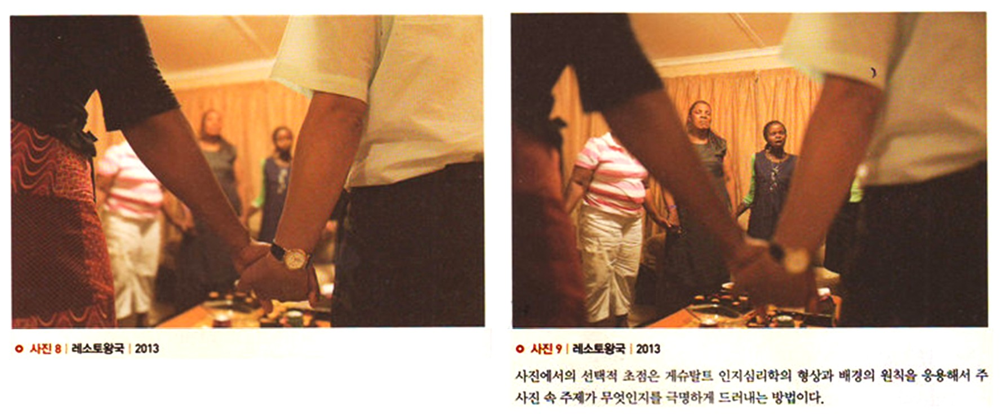
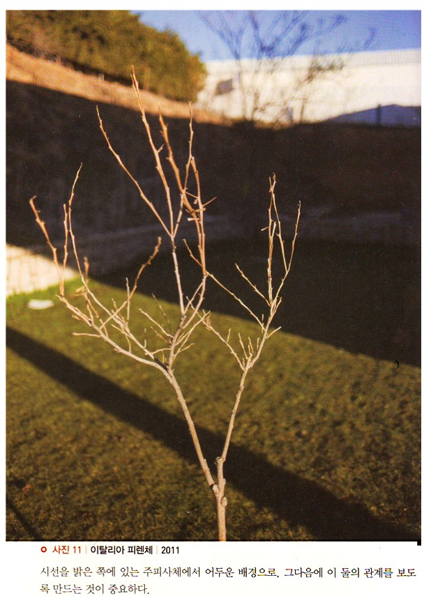
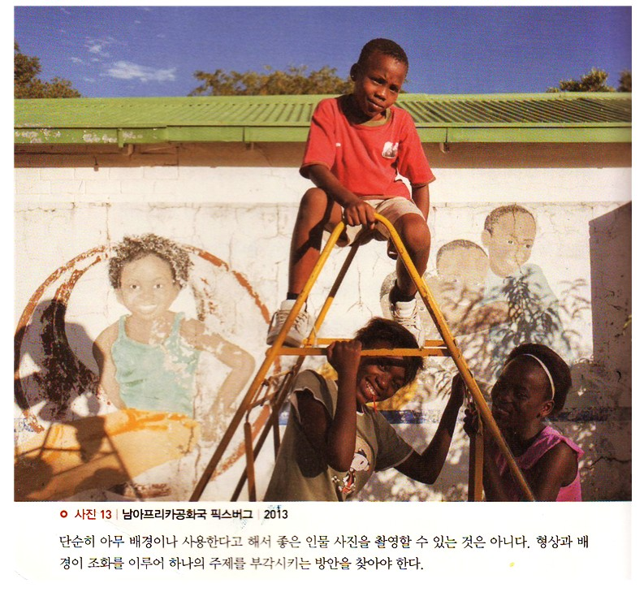

메시지가 효과적으로 전달되는 사진의 경우 주 피사체인 형상이 배경과 대조를 이루면서 두드러지게 나타난다. 독자들은 이러한 사진을 통해 쉽게 그 메시지를 접수하게 된다.
그러나 깊은 심도로 인해 전경과 배경에 모두 초점이 맞으면, 주 피사체인 형상에 시선이 고정되지 않고 자꾸 배경으로 시선이 빠진다. 아웃포커스가 된 배경은 형상과 배경의 극명한 대조를 만들지만, 아웃포커스가 된 전경은 오히려 사진 메시지를 약화시킨다.
앞의 사진은 아웃 포커스된 배경을 보여주며 전경의 주제가 명확히 드러난다. 뒤의 사진은 전경이 아웃포커스되어 뒤쪽의 연밥을 강조하긴하나 역발상으로 이렇게 찍는 경우도 있긴하지만 어딘지 모르게 불편하다. 자꾸만 아웃포커스된 전경에 눈길이 갔다가 배경으로 빠진다. 전경을 보았다가 배경을 보는 행위가 반복되면서 쉽게 주제에 빠져들지 못한다.
사진에서의 선택적 초점은 게슈탈트 인지심리학의 형상과 배경의 원칙을 응용해서 주사진 속 주제가 무엇인지를 극명하게 드러내는 방법이다. 사진 속에서 무엇이 형상(주제)인지를 찾으려고 노력하면서 우리는 시각인지의 게슈탈트 이론을 따라가게 된다.
뒤의 사진의 붉은색 부분은 리처드 자키아(Richard Zakia)가 말하는 형상과 배경의 특징들을 가지고 있음에도 불구하고 주제는 아니다.
참고로 리처드 자키아가 말하는 형상과 배경의 관계는 다음과 같다.
• 형상은 일반적으로 배경보다 작다.
• 형상은 경계를 가지고 있지만, 배경은 그렇지 않다.
• 형상은 배경보다 좀 더 강렬한 형태를 가지고 있다.
• 물리적으로 동일한 위치에 놓여 있을지라도 형상은
배경보다도 더 가깝게 느껴진다.
아래 사진을 보면 앞에 있는 형상인 아이들에게 시선이 먼저 닿는다. 하지만 그들이 바라보는 시선에 의해 중경에 있는 나무 위의 아이에게로 시선이 옮겨진다. 그리고 뒤에 있는 아이가 바라보는 방향을 따라 우리의 시선은 다시 앞에 있는 아이에게로 간다. 사진 속 인물이 바라보는 방향이나 몸짓에 의해서도 구성은 영향을 받는다. 이 사진의 경우는 근경과 중경에 형상이 배치되었고, 멀리 있는 나무들이 배경의 역할을 한다.
 형상과 배경의 시각적 노이즈
형상과 배경의 시각적 노이즈
일상생활에서 사람들은 자신의 욕구, 관심 혹은 당시의 기분에 따라 상이한 오브제들을 형상, 즉 주제로 본다. 우리가 관심을 가지는 그 어떤 대상도 형상이 되며, 그 주변부는 우리가 의도적으로 관심을 기울이지 않는 한 배경이 된다.
텔레비전이나 스크린에 영화 엔딩 크레디트가 올라갈 때, 사람들은 이러한 글자와 배경 중 하나만을 보게 된다. 우리의 눈은 이 2가지를 동시에 초점이 맞는 상태로 볼 수 없도록 되어 있다.
성공적인 사진은 사진가가 형상으로 보이기 원하는 부분으로 독자를 이끈다. 이를 위해 사진가는 선택적 초점 • 구성 • 조명 • 원근감 • 포토샵(혹은 전통 암실)테크닉을 통해 배경으로부터 관심의 중심이 되는 부분이 두드러지게 보일 수 있도록 만들 수 있다.
전경과 배경 등의 주변 요소가 관심의 중심이 되는 형상과 시각적으로 다투게 되면, 사진이 가지고 있는 의도된 메시지는 약화되거나 왜곡될 수 있다.
아래 사진을 보면 앞쪽에 밝은 나무가 있고, 마치 이 나무의 실루엣과 같은 형상으로 배경에 또 다른 나무가 보인다. 하늘은 짙푸르지만 적당히 어둡다. 만약에 배경이 너무 밝거나 튀는 색상이 있다면, 앞에 있는 나무에 시선이 머물기 어렵다. 시선을 밝은 쪽에 잇는 주 피사체에서 어두운 배경으로, 그 다음에 이 둘의 관계를 보도록 만드는 것이 중요하다. 만약 이런 관계가 무너지게 되면, 배경은 사진의 메시지를 약화시키는 노이즈에 불과하다.
 배경의 이용, 현실과 예술의 혼합그림 혹은 사진으로 구성된 벽화는 인물 사진을 촬영하기 위한 배경으로 자주 활용되곤 한다. 인물 사진을 효과적으로 촬영하기 위해서는 배경의 벽화가 주제와 관련이 있거나 사진 메시지에 어느 정도 공헌할 수 있어야 한다.
단순히 아무 배경이나 사용한다고 해서 좋은 인물 사진을 촬영할 수 있는 것은 아니다. 결국 형상과 배경이 조화를 이루어 하나의 주제를 부각시키는 방안을 찾아야 한다.
이를 통해 독자들의 관심이 주제와 배경을 오가면서 상호작용을 해야 하는 것이지, 혼란스러움을 만들어내서는 안 된다는 점을 명심해야 한다.
아래 사진에서 전경에 있는 아이들은 배경의 벽화 속 아이들과 서로 좋은 의미에서의 상호작용을 한다. 서로 다투기보다는 밝은 분의와 벽화가 앞에 있는 아이들의 모습을 더 밝게 보이도록 만든다.
[참고문헌]
[1]인지심리학과 그 응용,‘존 로버트 앤더슨’지음, 이영애 옮김, 이화대출판부, 2013. 1.18.
[2]원하는 사진을 어떻게 찍는가, 김성민, 소울메이트, 2015. 2. 9,
....
....
....
....
....